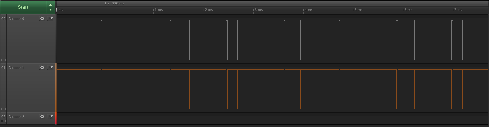
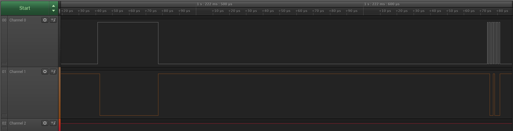
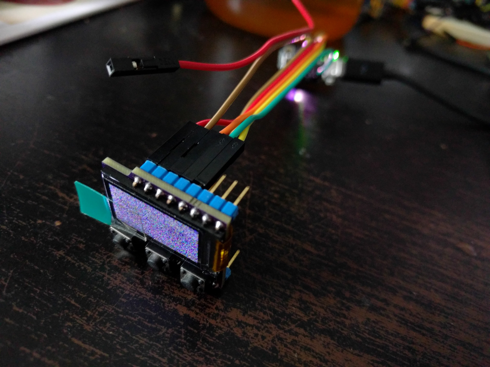

Software¶
Published on 2017-09-01 in Trinket M0 TFT.
While waiting for the PCBs, I decided to try and see if the Adafruit RGB Display library for CircuitPython will work properly on the Trinket M0 with this display. I used the project-19377 I made earlier, connecting it with wires to the trinket.
The first problem, that library supports the “green tab” ST7735 displays, but not the “red tab” ones — and of course, the one that I have, despite having a green tab, is of the “red tab” variety and needs a different initialization sequence. Fortunately the MicroPython version of that library supports it, so I made a quick pull request to also add it to the CircuitPython version. I tested it on the ESP8266, so that I can compare both MicroPython and CircuitPython, and it worked fine. Great.
Now, back to the Trinket M0, it still doesn’t work. The display remains blank. What’s the problem? It worked with the ESP8266. Let’s take a logic analyzer and see…
Hmm, that doesn’t look right. Before every byte being transmitted, there is this weird blip both on the data and the clock lines. Let’s look closer.
Yeah, definitely something is not right. What could it be? Probably something specific to the Trinket M0. So I reported the bug in the CircuitPython project, and went to sleep.
The next day I had a look into the code of the display library, and the code of the BusDevice library that it uses, and had an epiphany. The BusDevice code calls_spi.configure() _before every transmission, to make sure it’s done with the correct baud rate and mode — and that call resets the SPI peripheral and causes the blip.
Sure enough, commenting that line out makes the display work:
